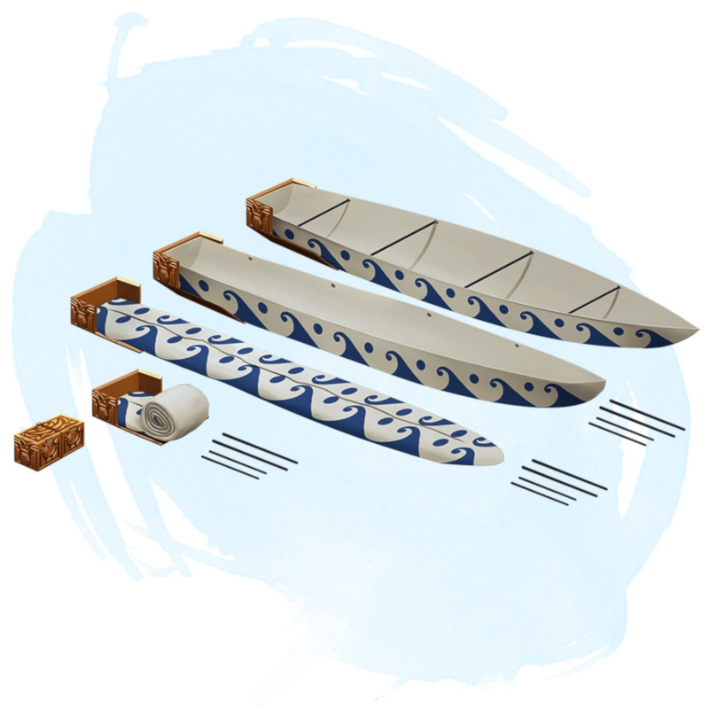

Bateau pliable
[ Folding Boat ]
Objet merveilleux, rare
Cet objet ressemble à une boîte en bois de 30 centimètres de long, 15 centimètres de large, et 15 centimètres de hauteur. Il pèse 2 kg et flotte. Il peut être ouvert pour y entreposer des objets à l'intérieur. Cet objet a également trois mots de commande, chacun nécessitant une action pour être prononcé.
Le premier mot de commande entraîne le dépliement de la boîte en un bateau de 3 mètres de long, 1,20 mètre de large et 60 centimètres de profondeur. Le bateau possède une paire de rames, une ancre, un mât, et une voile triangulaire. Le bateau peut contenir jusqu'à 4 créatures de taille M confortablement installées.
Le second mot de commande provoque le dépliage de la boîte en un navire de 7,20 mètres de long, 2,40 mètres de large, et 1,80 mètre de profondeur. Ce navire a un pont, des sièges de rame, cinq paires de rames, un aviron de queue, une ancre, une cabine de pont, et un mât portant une voile carrée. Le bateau peut contenir jusqu'à 15 créatures de taille M confortablement installées.
Lorsque la boîte devient un vaisseau, son poids devient celui d'un vaisseau de sa taille, et tout ce qui était placé dans la boîte se trouve dans le bateau.
Le troisième mot de commande fait revenir le bateau pliable à son état de boîte, à condition qu'aucune créature ne soit à son bord. Tout objet dans le navire qui ne peut pas tenir dans la boîte reste en dehors de la boîte lorsqu'elle se plie. Tout objet qui se trouve dans le vaisseau et pouvant tenir dans la boîte y est rangé.
Le premier mot de commande entraîne le dépliement de la boîte en un bateau de 3 mètres de long, 1,20 mètre de large et 60 centimètres de profondeur. Le bateau possède une paire de rames, une ancre, un mât, et une voile triangulaire. Le bateau peut contenir jusqu'à 4 créatures de taille M confortablement installées.
Le second mot de commande provoque le dépliage de la boîte en un navire de 7,20 mètres de long, 2,40 mètres de large, et 1,80 mètre de profondeur. Ce navire a un pont, des sièges de rame, cinq paires de rames, un aviron de queue, une ancre, une cabine de pont, et un mât portant une voile carrée. Le bateau peut contenir jusqu'à 15 créatures de taille M confortablement installées.
Lorsque la boîte devient un vaisseau, son poids devient celui d'un vaisseau de sa taille, et tout ce qui était placé dans la boîte se trouve dans le bateau.
Le troisième mot de commande fait revenir le bateau pliable à son état de boîte, à condition qu'aucune créature ne soit à son bord. Tout objet dans le navire qui ne peut pas tenir dans la boîte reste en dehors de la boîte lorsqu'elle se plie. Tout objet qui se trouve dans le vaisseau et pouvant tenir dans la boîte y est rangé.
Dungeon Master´s Guide (SRD)
